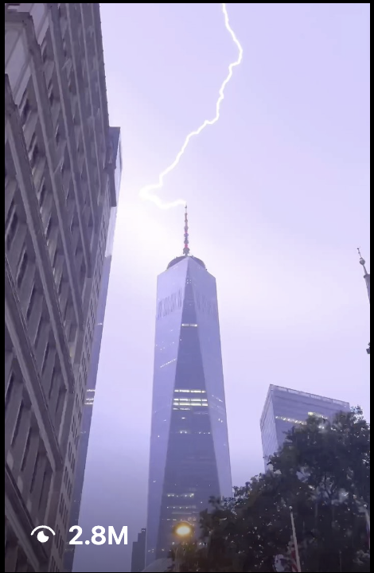

Shane Boyer shot Saint Laurent his way.
Luxury usually wants gloss. Shane Boyer gave YSL something rarer for FW23 — a cinematic, first-person film that looks like his New York, with Saint Laurent inside it. Proof that a POV creator can carry a fashion house.
 YSL · FW23
YSL · FW23
Follower/like figures verified July 2026 (TikTok @shaneboyerr, Instagram @shaneboyer_). The Saint Laurent FW23 film is part of Boyer's fashion portfolio, supplied via DGTL.
Fashion houses can buy gloss anywhere. What they can't buy easily is a point of view — which is why Saint Laurent's FW23 moment sits so well in the hands of Shane Boyer (@shaneboyerr). His YSL fashion film doesn't imitate a runway edit; it looks like Boyer's cinematic New York, with the brand folded into a world that already commands 2.5M+ followers.
That's a different value proposition than a red-carpet placement. Boyer's audience shows up for mood and craft — patient, colour-graded, first-person footage. Put YSL inside that language and the luxury reads as taste rather than a logo drop. For a house courting a younger, film-literate audience, that translation is the whole point.

Luxury, translated into his language
Boyer's signature is restraint — he holds a frame until it feels like a memory. Applied to fashion, that patience flatters the clothes without shouting about them. The Saint Laurent film reads as an art piece a viewer chooses to watch, not an ad they scroll past, and it lives in the same feed as his most-shared New York work, so it inherits that audience's attention.
He didn't copy a runway edit. He made YSL look like his New York.
— The DGTL Influence view on Shane Boyer x YSLWhy a fashion house books a POV creator
Because reach alone is cheap and taste is not. A house like Saint Laurent gains more from one creator whose aesthetic already signals discernment than from a wall of generic placements. Boyer brings a film-maker's eye and an audience that trusts it — the exact combination that makes luxury feel discovered instead of sold. You can see the range on his TikTok and Instagram.

- A point of view money can't easily buy — cinematic, first-person restraint.
- Luxury translated into content his audience already chooses to watch.
- A film-literate 2.5M+ audience courting exactly the demo fashion wants.
- The brand reads as taste, not a logo drop.
It's the case for creator-led luxury in one film: hand the brief to someone whose eye already signals quality, and let the clothes live inside their world. Saint Laurent got a POV, not a placement.
The fashion & signature work
FW23 Signature
Signature Golden hour
Golden hour Mood
Mood Dream
Dream Craft
CraftA network people actually trust.
80+ vetted creators, matched to your brand — not bolted on. Let's scope an activation that moves real numbers.